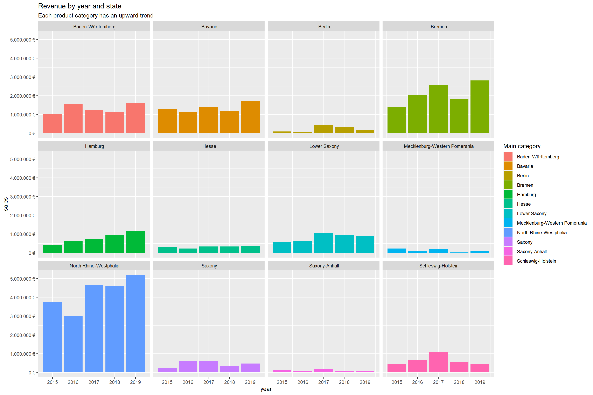
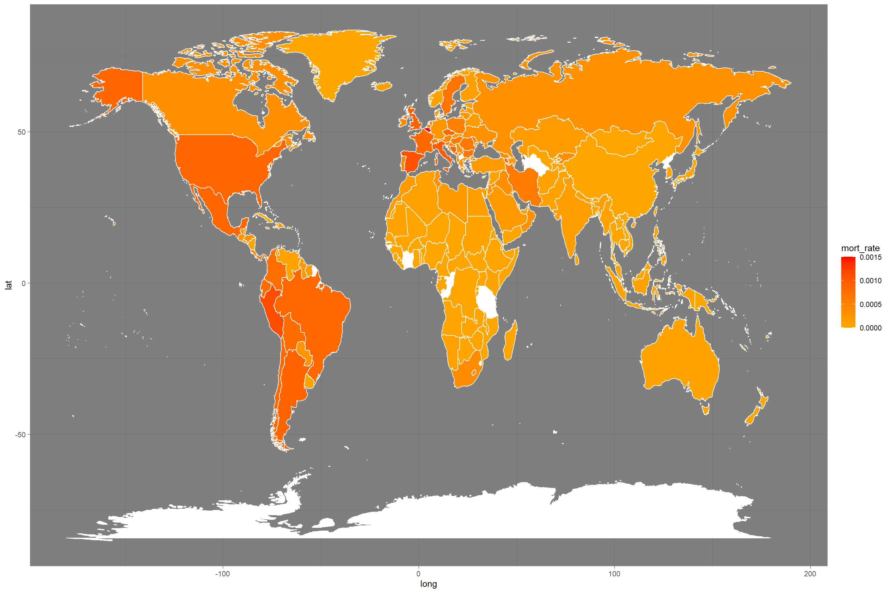

Ermin’s Journal
Ermin Kevric
2020-11-23
Last compiled: 2020-12-06
0.1 Introduction to tidyverse challenge
# 1.0 Load libraries ----
library(tidyverse)
library(readxl)
library(lubridate)
bikes_data <- read_excel("C:/Users/Ermin Kevric/Desktop/TUHH/Semester I/Course Material/8. Business basics/DS_101/00_data/01_bike_sales/01_raw_data/bikes.xlsx")
orderlines_data <- read_excel("C:/Users/Ermin Kevric/Desktop/TUHH/Semester I/Course Material/8. Business basics/DS_101/00_data/01_bike_sales/01_raw_data/orderlines.xlsx")
bikeshops_data <- read_excel("C:/Users/Ermin Kevric/Desktop/TUHH/Semester I/Course Material/8. Business basics/DS_101/00_data/01_bike_sales/01_raw_data/bikeshops.xlsx")
new_orderlines_joined <- orderlines_data %>%
left_join(bikes_data, by=c('product.id' = 'bike.id')) %>%
left_join(bikeshops_data, by = c('customer.id' = "bikeshop.id"))
wrangled_tbl <- new_orderlines_joined %>%
separate(col = category,
into = c('category.1', 'category.2', 'category.3'),
sep = ' - ') %>%
separate(col = location,
into = c('city', 'state'),
sep = ',') %>%
mutate(total.price = price * quantity) %>%
select(-...1,-gender) %>%
select(-ends_with('.id')) %>%
bind_cols(new_orderlines_joined %>% select(order.id)) %>%
select(order.id, contains('order'), contains('model'), contains("category"),
price, quantity, total.price,
everything()) %>%
rename(bikeshop = name) %>%
set_names(names(.) %>% str_replace_all("\\.", "_"))
sales_by_year <- wrangled_tbl %>%
#Selecting order_date and total_price
select(order_date, total_price, state) %>%
#Creating a new column
mutate(year = year(order_date)) %>%
#Grouping by year and afterwards summarizing each year regardless of the location
#The summary is esentially sum of the total prices for the specific year for all locations.
group_by(year, state) %>%
summarize(sales = sum(total_price)) %>%
#Add another column which basically presents the data in a nicer format
mutate(sales_text = scales::dollar(sales, big.mark = ".", decimal.mark = ",",
prefix = "",
suffix = '€'))
sales_by_year %>%
ggplot(aes(x = year, y = sales, fill = state)) +
geom_col() + # Run up to here to get a stacked bar plot
facet_wrap(~ state) +
scale_y_continuous(labels = scales::dollar_format(big.mark = ".",
decimal.mark = ",",
prefix = "",
suffix = " €")) +
labs(
title = "Revenue by year and state",
subtitle = "Each product category has an upward trend",
fill = "Main category" # Changes the legend name
)
0.2 Data Acquisition 2a)
library(jsonlite)
library(glue)
library(httr)
library(rstudioapi)
library(tidyverse)
library(jsonlite)
# Looking up a location on accuweather.com for Hamburg, it can be found that
# ... the location code for Hamburg is 178556. We need that for the data
# Pulling data for weather forecast for one day for Hamburg.
token <- "R9NZ8MA6kDkcPPVHLLN6EBKS5pTRTw7D"
raw_accuweather_data <- GET(glue("http://dataservice.accuweather.com/forecasts/v1/daily/1day/178556?apikey={token}"))
accuweather_data <- content(raw_accuweather_data, as = 'text')
accuweather_data_json <- fromJSON(accuweather_data)
forecast_hamburg <- accuweather_data_json$DailyForecasts
forecast_hamburg <- forecast_hamburg %>%
as_tibble() 0.3 Data Acquisition 2b)
library(RSQLite)
library(tidyverse)
library(httr)
library(glue)
library(jsonlite)
library(rvest)
library(stringi)
library(xopen)
library(dplyr)
base_url <- 'https://www.rosebikes.com/bikes'
# 1. Function to get bike family URLs.
get_bike_family_urls <- function(base_url) {
bike_family_urls <- read_html(base_url) %>%
html_nodes(css = ".catalog-categories-item > a") %>%
html_attr('href') %>%
# Convert vector to tibble
enframe(name = "position", value = "subdirectory") %>%
# Add the domain because we will get only the subdirectories
mutate(
url = glue('https://www.rosebikes.com{subdirectory}')
)
bike_family_urls <- bike_family_urls %>%
filter(!grepl('sale', url)) %>%
filter(!grepl('kids', url))
bike_family_urls <- bike_family_urls['url']
}
# 2. Function to get bike family URLs.
get_model_urls <- function(url) {
bike_type_url <- read_html(url) %>%
html_nodes(css = ".catalog-category-bikes__content > a") %>%
html_attr('href') %>%
enframe(name = "position", value = "url") %>%
mutate(url = glue('https://www.rosebikes.com{url}'))
}
# 3. Function to get the names of each bike
get_bike_names <- function(url) {
bike_model_name_tbl <- read_html(url) %>%
html_nodes(css = ".catalog-category-model__title") %>%
html_text() %>%
# Convert vector to tibble
as_tibble()
}
# 4. Function to get the prices of each bike
get_bike_prices <- function(url) {
bike_model_price_tbl <- read_html(url) %>%
html_nodes(css = ".product-tile-price__current-value") %>%
html_text() %>%
# Convert vector to tibble
as_tibble()
}
#### APPLYING ABOVE FUNCTIONS
bike_family_url_tbl <- get_bike_family_urls(base_url)
bike_family_url_tbl <- bike_family_url_tbl %>%
slice(1:3) # Pick 3 categories
# Create a table with bike model URLS
bike_model_url_tbl <- tibble()
for (i in seq_along(bike_family_url_tbl$url)) {
web <- toString(bike_family_url_tbl$url[i])
bike_model_url_tbl <- bind_rows(bike_model_url_tbl, get_model_urls(web))
}
# Create a table with bike model names
bike_model_names_tbl <- tibble()
for (i in seq_along(bike_model_url_tbl$url)) {
web <- toString(bike_model_url_tbl$url[i])
bike_model_names_tbl <- bind_rows(bike_model_names_tbl, get_bike_names(web))
}
# Rename cols
names(bike_model_names_tbl)[1] <- "Bike Model"
# Create a table with bike prices
bike_model_prices_tbl <- tibble()
for (i in seq_along(bike_model_url_tbl$url)) {
web <- toString(bike_model_url_tbl$url[i])
bike_model_prices_tbl <- bind_rows(bike_model_prices_tbl, get_bike_prices(web))
}
# Rename cols
names(bike_model_prices_tbl)[1] <- "Bike Prices"
# Join into one table
table_of_prices <- bind_cols(bike_model_names_tbl,bike_model_prices_tbl)
knitr::kable(table_of_prices[1:10, ], caption = 'Rosebike.com bicycle prices')| Bike Model | Bike Prices |
|---|---|
| GROUND CONTROL 1 | €1,699.00 |
| GROUND CONTROL 2 | €1,999.00 |
| GROUND CONTROL 3 | €2,599.00 |
| GROUND CONTROL 4 | €3,299.00 |
| ROOT MILLER 1 | €1,999.00 |
| ROOT MILLER 2 | €2,599.00 |
| ROOT MILLER 3 | €3,399.00 |
| PIKES PEAK 1 | €3,099.00 |
| PIKES PEAK 2 | €3,599.00 |
| PIKES PEAK 3 | €4,299.00 |
0.4 Data Wrangling a)
library(vroom)
library(RSQLite)
library(tidyverse)
library(httr)
library(glue)
library(jsonlite)
library(rvest)
library(stringi)
library(xopen)
library(dplyr)
col_types <- list(
id = col_character(),
type = col_character(),
number = col_character(),
country = col_character(),
date = col_date("%Y-%m-%d"),
abstract = col_character(),
title = col_character(),
kind = col_character(),
num_claims = col_double(),
filename = col_character(),
withdrawn = col_double()
)
# For Assignee File
col_types2 <- list(
id = col_character(),
type = col_character(),
name_first = col_character(),
name_last = col_character(),
organization = col_character()
)
# For Patent Assignee File
col_types3 <- list(
patent_id = col_character(),
assignee_id = col_character(),
location_id = col_character()
)
doc_path <- ("C:/Users/Ermin Kevric/Desktop/TUHH/Semester I/Course Material/8. Business basics/Data Wrangling Patents/patent.tsv")
doc_path2 <- ("C:/Users/Ermin Kevric/Desktop/TUHH/Semester I/Course Material/8. Business basics/DS_101/00_data/03_tidying/assignee.tsv")
doc_path3 <- ("C:/Users/Ermin Kevric/Desktop/TUHH/Semester I/Course Material/8. Business basics/DS_101/00_data/03_tidying/patent_assignee.tsv")
patent_tbl <- vroom(
file = doc_path,
delim = "\t",
col_types = col_types,
na = c("", "NA", "NULL")
)
assignee_tbl <- vroom(
file = doc_path2,
delim = "\t",
col_types = col_types2,
na = c("", "NA", "NULL")
)
pat_assignee_tbl <- vroom(
file = doc_path3,
delim = "\t",
col_types = col_types3,
na = c("", "NA", "NULL")
)
# List the 10 US companies with the most assigned/granted patents.
# To choose the patents by corporations, we go to assignee and filter
# the type column keeping 2.
# USA corporation names and their assignee IDs
corporations_id_names <- assignee_tbl %>%
select(id, type, organization) %>%
filter(type == 2) # This here makes sure they're from USA
# Top companies in the world which have been assigned a patent.
# We can group by the assignee_id, which is unique to each corporation,
# and then simply count the number of patents for that corporation.
top_patent_wrld <- pat_assignee_tbl %>%
group_by(assignee_id) %>%
summarize(
count = n()
) %>%
ungroup() %>%
arrange(desc(count)) %>%
rename(id = assignee_id) %>%
head(100) # Top 100 companies in the world which have been granted a patent.
# Top 100 companies in the world is reasonably high to cross reference with
# U.S companies. To do this, a right_join by their unique id can be used.
top_10_us <- right_join(top_patent_wrld, corporations_id_names, by = 'id') %>%
head(10) %>%
select(organization)
temp = "C:/Users/Ermin Kevric/Documents/GitHub/ws20-business-data-science-basics---lab-journal-erminke1/top10.rds"
write_rds(top_10_us, temp)read_rds("C:/Users/Ermin Kevric/Documents/GitHub/ws20-business-data-science-basics---lab-journal-erminke1/top10.rds")## # A tibble: 10 x 1
## organization
## <chr>
## 1 International Business Machines Corporation
## 2 General Electric Company
## 3 Intel Corporation
## 4 Hewlett-Packard Development Company, L.P.
## 5 Microsoft Corporation
## 6 Micron Technology, Inc.
## 7 QUALCOMM Incorporated
## 8 Texas Instruments Incorporated
## 9 Xerox Corporation
## 10 Apple Inc.0.5 Data Wrangling b)
library(vroom)
library(RSQLite)
library(tidyverse)
library(httr)
library(glue)
library(jsonlite)
library(rvest)
library(stringi)
library(xopen)
library(dplyr)
library(lubridate)
col_types <- list(
id = col_character(),
type = col_character(),
number = col_character(),
country = col_character(),
date = col_date("%Y-%m-%d"),
abstract = col_character(),
title = col_character(),
kind = col_character(),
num_claims = col_double(),
filename = col_character(),
withdrawn = col_double()
)
# For Assignee File
col_types2 <- list(
id = col_character(),
type = col_character(),
name_first = col_character(),
name_last = col_character(),
organization = col_character()
)
# For Patent Assignee File
col_types3 <- list(
patent_id = col_character(),
assignee_id = col_character(),
location_id = col_character()
)
doc_path <- ("C:/Users/Ermin Kevric/Desktop/TUHH/Semester I/Course Material/8. Business basics/Data Wrangling Patents/patent.tsv")
doc_path2 <- ("C:/Users/Ermin Kevric/Desktop/TUHH/Semester I/Course Material/8. Business basics/DS_101/00_data/03_tidying/assignee.tsv")
doc_path3 <- ("C:/Users/Ermin Kevric/Desktop/TUHH/Semester I/Course Material/8. Business basics/DS_101/00_data/03_tidying/patent_assignee.tsv")
patent_tbl <- vroom( #TBL FOR PATENTS
file = doc_path,
delim = "\t",
col_types = col_types,
na = c("", "NA", "NULL")
)
assignee_tbl <- vroom( #TBL For companies
file = doc_path2,
delim = "\t",
col_types = col_types2,
na = c("", "NA", "NULL")
)
pat_assignee_tbl <- vroom( # TBL for patetn-assigned comp.
file = doc_path3,
delim = "\t",
col_types = col_types3,
na = c("", "NA", "NULL")
)
# Filter assignee.tsv data to get U.S Companies Names and IDs.
us_corp_filt <- assignee_tbl %>%
filter(type == 2) %>%
select(id, organization) %>%
rename(assignee_id = id)
# Filter patent.tsv data to get patents issued in 2019
issued_2019 <- patent_tbl %>%
filter(year(date) == 2019) %>%
select(number) %>%
rename(patent_id = number)
# Combine U.S corporation assignee numbers with companies that have
# been assigned a patent (from around the world). This gives patents by their ID filed by
# u.s companies.
dt1 <- merge(us_corp_filt,pat_assignee_tbl,by="assignee_id")
# Then combine the table of patents issued in the U.S for 201
dt2 <- merge(dt1, issued_2019, by = "patent_id") %>%
group_by(organization) %>%
summarise(
count = n()
) %>%
arrange(desc(count)) %>%
head(10)
wrld_corp_filt <- assignee_tbl %>%
filter((type == 2 | type == 3)) %>%
select(id, organization) %>%
rename(assignee_id = id)
dt3 <- merge(wrld_corp_filt,pat_assignee_tbl,by="assignee_id")
dt4 <- merge(dt3, issued_2019, by = "patent_id") %>%
group_by(organization) %>%
summarise(
count = n()
) %>%
arrange(desc(count)) %>%
head(10)
memory.limit(size = 6000)
temp2 = "C:/Users/Ermin Kevric/Documents/GitHub/ws20-business-data-science-basics---lab-journal-erminke1/top102019.rds"
write_rds(dt4, temp2)read_rds("C:/Users/Ermin Kevric/Documents/GitHub/ws20-business-data-science-basics---lab-journal-erminke1/top102019.rds")## # A tibble: 10 x 2
## organization count
## <chr> <int>
## 1 International Business Machines Corporation 9265
## 2 Samsung Electronics Co., Ltd. 7205
## 3 Canon Kabushiki Kaisha 3595
## 4 Intel Corporation 3526
## 5 LG Electronics Inc. 3314
## 6 Microsoft Technology Licensing, LLC 3106
## 7 Apple Inc. 2817
## 8 Ford Global Technologies, LLC 2624
## 9 Amazon Technologies, Inc. 2533
## 10 Huawei Technologies Co., Ltd. 24540.6 Data Wrangling c)
library(vroom)
library(RSQLite)
library(tidyverse)
library(httr)
library(glue)
library(jsonlite)
library(rvest)
library(stringi)
library(xopen)
library(dplyr)
library(lubridate)
# For patent_tbl
col_types <- list(
id = col_character(),
number = col_character(),
date = col_date("%Y-%m-%d"),
num_claims = col_double()
)
#For Uspc_tbl
col_types1 <- list(
patent_id = col_character(),
mainclass_id = col_character(),
sequence = col_character ()
)
# For Assignee File
col_types2 <- list(
id = col_character(),
type = col_character(),
organization = col_character()
)
# For Patent Assignee File
col_types3 <- list(
patent_id = col_character(),
assignee_id = col_character(),
location_id = col_character()
)
doc_path <- ("C:/Users/Ermin Kevric/Desktop/test tbls/patent.tsv")
doc_path1 <- ("C:/Users/Ermin Kevric/Desktop/test tbls/uspc.tsv")
doc_path2 <- ("C:/Users/Ermin Kevric/Desktop/TUHH/Semester I/Course Material/8. Business basics/DS_101/00_data/03_tidying/assignee.tsv")
doc_path3 <- ("C:/Users/Ermin Kevric/Desktop/TUHH/Semester I/Course Material/8. Business basics/DS_101/00_data/03_tidying/patent_assignee.tsv")
uspc_tbl <- vroom( #TBL For companies
file = doc_path1,
delim = "\t",
col_types = col_types1,
na = c("", "NA", "NULL")
)
assignee_tbl <- vroom( #TBL For companies
file = doc_path2,
delim = "\t",
col_types = col_types2,
na = c("", "NA", "NULL")
)
pat_assignee_tbl <- vroom( # TBL for patetn-assigned comp.
file = doc_path3,
delim = "\t",
col_types = col_types3,
na = c("", "NA", "NULL")
)
# Find the names of top 10 us companies
corporations_id_names <- assignee_tbl %>%
select(id, type, organization) %>%
filter(type == 2 | type == 3) %>%
rename(assignee_id = id)# This here makes sure they're compaines worldwide
corp_worldwide_patents <- pat_assignee_tbl %>%
filter(pat_assignee_tbl$assignee_id %in% corporations_id_names$assignee_id)
# Top companies in the world which have been assigned a patent.
# We can group by the assignee_id, which is unique to each corporation,
# and then simply count the number of patents for that corporation.
top_patent_wrld <- corp_worldwide_patents %>%
group_by(assignee_id) %>%
summarize(
count = n()
) %>%
ungroup() %>%
arrange(desc(count)) %>%
head(10)
# Top 100 companies in the world which have been granted a patent.
# Top 100 companies in the world is reasonably high to cross reference with
# U.S companies. To do this, a right_join by their unique id can be used.
# Patent asgn table has assigne_id and patent_id
# Check which ones from the top 10 companies are in patent_assignee_tbl
patents_orgs <- pat_assignee_tbl %>%
filter(pat_assignee_tbl$assignee_id %in% top_patent_wrld$assignee_id)
# The patents_orgs table has the top 10 companies worldwide in terms of patents, and their patents, and ids.
# Uspc_tbl has patents and the corresponding mainclassids.
# We shoud group by the mainclass id and count
uspc_tbl_filtered <- uspc_tbl %>%
select(mainclass_id, patent_id, sequence) %>%
left_join(patents_orgs, by = 'patent_id') %>%
group_by(mainclass_id) %>%
summarize(
count = n()
)%>%
arrange(desc(count)) %>%
head(10)
memory.limit(size = 6000)
temp3 = "C:/Users/Ermin Kevric/Documents/GitHub/ws20-business-data-science-basics---lab-journal-erminke1/data33.rds"
write_rds(uspc_tbl_filtered, temp3)read_rds("C:/Users/Ermin Kevric/Documents/GitHub/ws20-business-data-science-basics---lab-journal-erminke1/data33.rds") %>%
select(mainclass_id)## # A tibble: 10 x 1
## mainclass_id
## <chr>
## 1 257
## 2 455
## 3 370
## 4 438
## 5 709
## 6 435
## 7 514
## 8 345
## 9 348
## 10 3750.7 Data Visualization a)
library(tidyverse)
library(dplyr)
library(lubridate)
library(ggplot2)
library(scales)
covid_data_tbl <- read_csv("https://opendata.ecdc.europa.eu/covid19/casedistribution/csv")
covid_data_tbl <- covid_data_tbl[order(as.Date(covid_data_tbl$dateRep, format="%d/%m/%Y")),]
covid_data_tbl$cases <- abs(covid_data_tbl$cases) # no negative cases :)
covid_data_tbl2 <- covid_data_tbl %>%
filter(countriesAndTerritories %in% c('Spain', 'United_Kingdom', 'France', 'Germany','United_States_of_America')) %>%
select(dateRep, countriesAndTerritories, cases) %>%
group_by(countriesAndTerritories) %>%
mutate(cumulativeCases = cumsum(cases)) %>%
select(dateRep, countriesAndTerritories, cumulativeCases) %>%
rename(countries = countriesAndTerritories)
# Plotting the values
ticks = c("Dec","Jan", 'Feb','March', 'April', 'May', 'June','July',
'Aug','Sept','Oct','Nov','Dec')
y_ticks = seq(0,max(covid_data_tbl2$cumulativeCases),1250000)
covid_data_tbl2 %>%
ggplot(aes(x = as.POSIXct(dateRep, format = '%d/%m/%Y'), y = cumulativeCases)) +
geom_line(aes(color = countries), size = 1) +
labs(x = 'Year 2020', y='Cumulative Cases', fill = 'Countries') +
scale_x_datetime(date_breaks = 'month', labels = label_date_short()) +
scale_y_continuous(breaks = c(y_ticks))
0.8 Data Visualization b)
library(tidyverse)
library(dplyr)
library(lubridate)
library(ggplot2)
theme_set(
theme_dark()
)
covid_data_tbl <- read_csv("https://opendata.ecdc.europa.eu/covid19/casedistribution/csv")
covid_data_tbl$cases <- abs(covid_data_tbl$cases) # no negative cases :)
covid_data_tbl$deaths <- abs(covid_data_tbl$deaths) # no negative deaths :)
world <- map_data('world') %>%
rename(countries = region) %>%
dplyr::select(countries,long,lat,group)
covid_data_tbl <- covid_data_tbl %>%
mutate(across(countriesAndTerritories, str_replace_all, "_", " ")) %>%
mutate(countriesAndTerritories = case_when(
countriesAndTerritories == "United Kingdom" ~ "UK",
countriesAndTerritories == "United States of America" ~ "USA",
countriesAndTerritories == "Czechia" ~ "Czech Republic",
TRUE ~ countriesAndTerritories
))
population <- covid_data_tbl %>%
group_by(countriesAndTerritories) %>%
dplyr::select(countriesAndTerritories, popData2019) %>%
unique() %>%
rename(countries = countriesAndTerritories)
mortality_rate_tbl <- covid_data_tbl %>%
group_by(countriesAndTerritories) %>%
summarise(
total_deaths = sum(deaths)
) %>%
rename(countries = countriesAndTerritories)
useful_map <- left_join(population,mortality_rate_tbl, by = "countries")
final_tbl <- left_join(world, useful_map, by = 'countries') %>%
mutate(mort_rate = total_deaths / popData2019)
#plotting the values
ggplot(final_tbl, aes(long, lat, group = group))+
geom_polygon(aes(fill = mort_rate), color = "white")+
scale_fill_gradient(low = 'orange', high = 'red', na.value = 'white')